This project is about flow models, which turn noise into an image by following a predicted velocity. In Part A I use a pretrained text-to-image flow model to denoise images, generate new ones, edit images, and make visual anagrams and hybrid images. In Part B I build a UNet from scratch and train it on MNIST, first as a one-step denoiser and then as a flow matching model that can generate digits.
Part 1.1: Constructing Noisy Training Inputs
We blend the noise and the real image together, so it's not just adding noise on top: the image itself also gets scaled down by t. Going from t = 0 to t = 1 takes us from pure noise to the real image, with the noise fading out as the image fades in.
noisy image = (1 - t) * noise + t * clean image, for t = 0.25, 0.5, 0.75 (noise is random Gaussian noise)
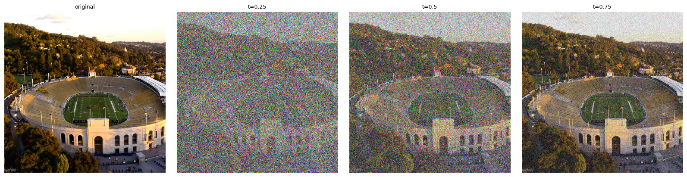
At t = 0.25 the stadium is barely visible through the noise, at 0.50 the field and stands show up, and at 0.75 most of the detail is back.
Part 1.2: Classical Denoising
Since the noisy image is scaled down by t, I divide by t to restore its brightness, then use a Gaussian blur to average out the noise. I tried σ = 1, 2, 4, 8, 16 and kept whichever had the lowest error against the clean image (σ = 8 at t = 0.25, 2 at t = 0.50, and 1 at t = 0.75).
denoised = blur(noisy image / t), using the blur strength (sigma = 1, 2, 4, 8, or 16) with the lowest error
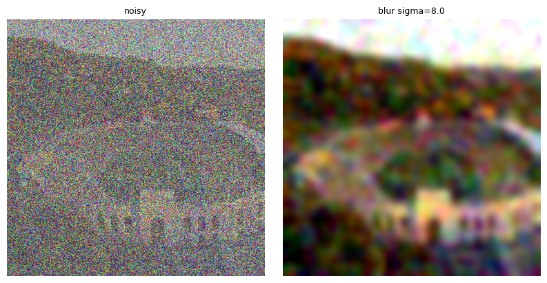
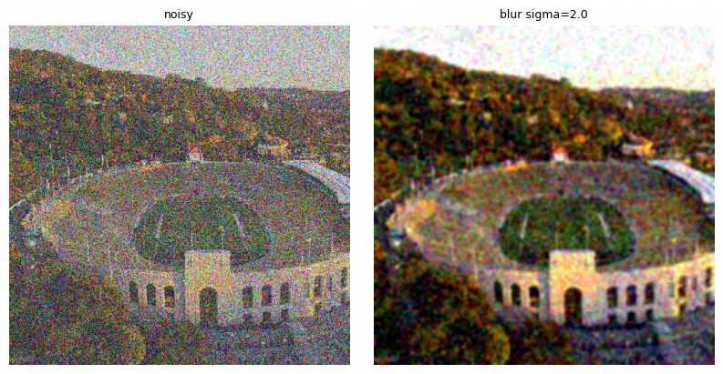
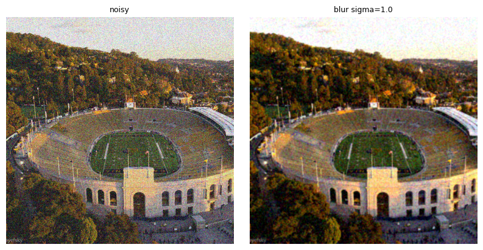
Blurring removes some noise but always trades it for detail. At t = 0.25 the result is just colored blobs, and even at t = 0.75 the fine texture in the stands and trees is gone.
Part 1.3: One-Step Denoising
With the prompt "a high quality photo", the model predicts the velocity pointing from the noisy image toward the clean image. Taking one step of size (1 − t) along it jumps straight to an estimate of the clean image.
denoised = noisy image + (1 - t) * velocity
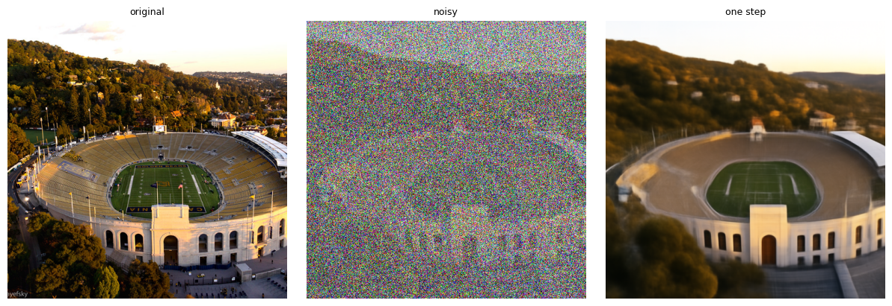
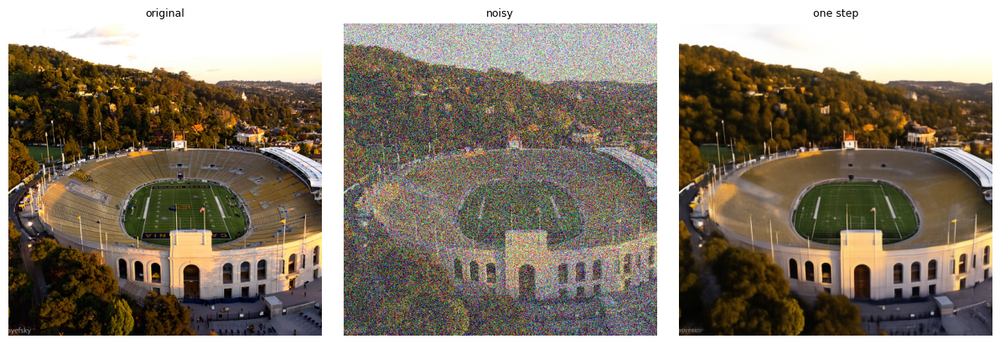
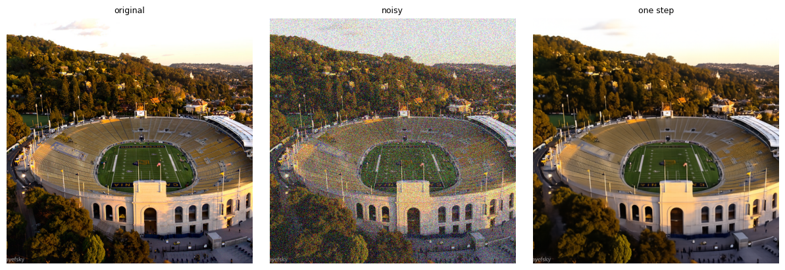
One step does much better than blurring: even at t = 0.25 it recovers a clean, recognizable stadium. The lower t is, though, the softer the result gets, since there's less of the real image left and the model has to guess more.
Part 1.4: Visualizing Velocity
I compare how far the model wants to move the noisy image (predicted update) with how far it actually needs to move to reach the clean image (true update), and plot the per-pixel error between them at each t.
predicted update = (1 - t) * predicted velocity
true update = (1 - t) * (clean image - noise) = clean image - noisy image
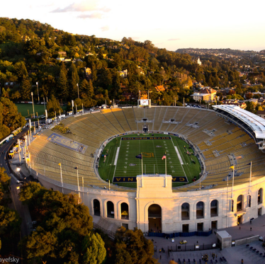
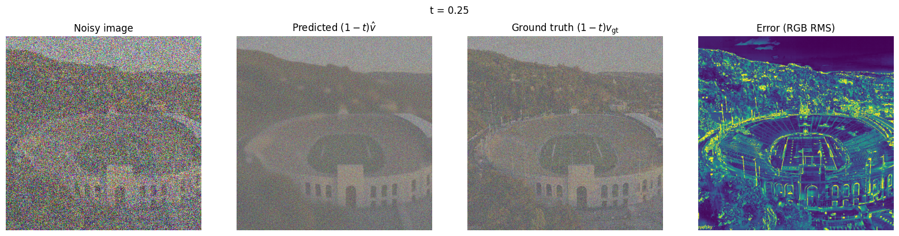
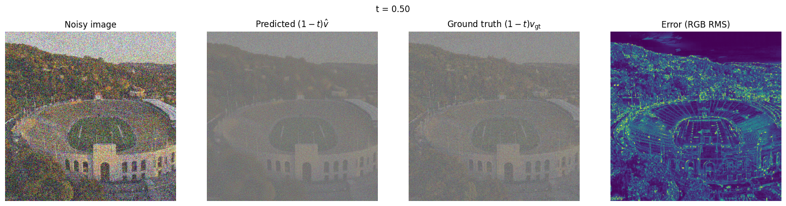
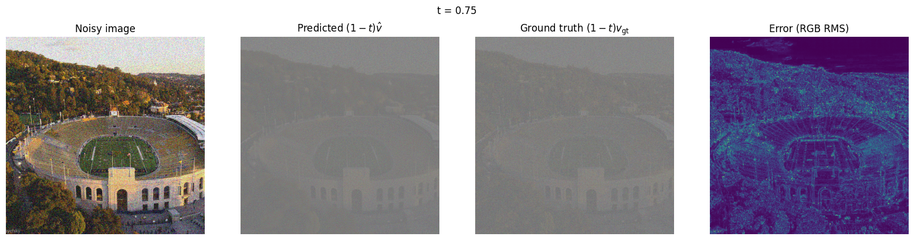
The error is biggest on edges and fine texture like the trees and stands and smallest on smooth areas like the sky. It shrinks as t increases since there's less noise left to remove.
Part 1.5: Iterative Denoising with Euler Sampling
Instead of one big jump, Euler sampling takes many small steps of size 0.02, recomputing the velocity at each one, until it reaches t = 1. Starting from the t = 0.5 image this is 25 updates, and I compare the result against the blur and one-step results.
next image = current image + step size * velocity, with step size 0.02, repeated until t = 1
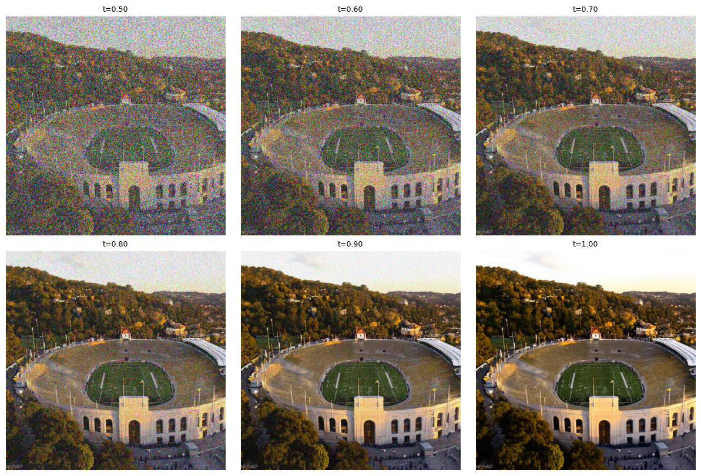
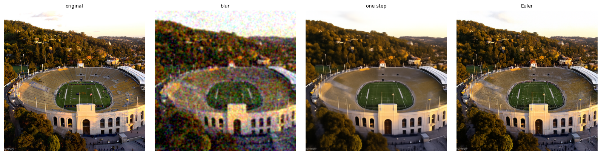
Blurring leaves color noise and smears everything, and the one-step estimate is clean but soft. Euler is the sharpest and brings back texture in the stands and trees, because it corrects the direction at every step instead of guessing the whole image at once.
Part 1.6: Generating Images from Noise
I ran the same Euler sampler starting at t = 0 from pure noise (50 updates) with the prompt "a high quality photo" to generate new images from scratch.

Even though the prompt doesn't name a subject, every sample is a portrait of a person, so I'm guessing the model treats "a high quality photo" as a photo of a person. Without guidance the quality of the faces are pretty random with some being an actual face and others basically being mush.
Part 2.1: Classifier-Free Guidance (CFG)
Classifier-free guidance runs the model twice per step, once with the prompt and once with an empty prompt, and pushes the velocity further in the direction the prompt adds (w = 7). I use the same starting noise as 1.6 so the results can be compared directly.
guided velocity = prompt velocity + 7 * (prompt velocity - empty-prompt velocity)

With guidance every face is clean and well lit, with no distorted features. The tradeoff is variety as shown by the samples all become similar types of faces with an almost identical background.
Part 3.1: Image-to-Image Editing
To edit an image, I noise it to a starting time t and then run Euler with CFG (w = 7, "a high quality photo") back to t = 1. A low starting t means most of the image is noise, so the model makes up almost everything. A high t keeps most of the original.
starting image = (1 - t) * noise + t * original image, then take Euler steps with the guided velocity until t = 1
Campanile

My own images
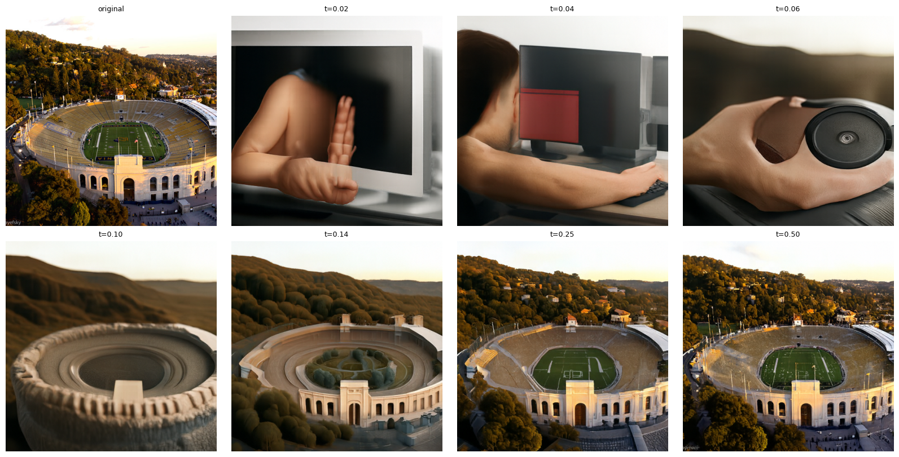
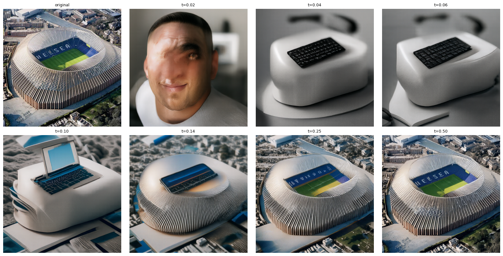
Web image
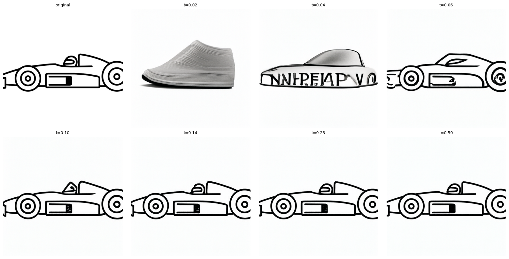
Hand-drawn images
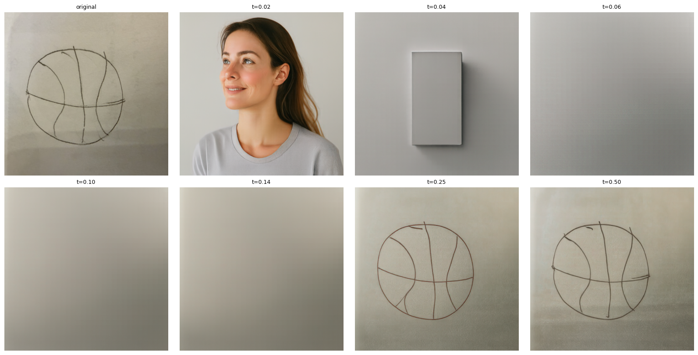
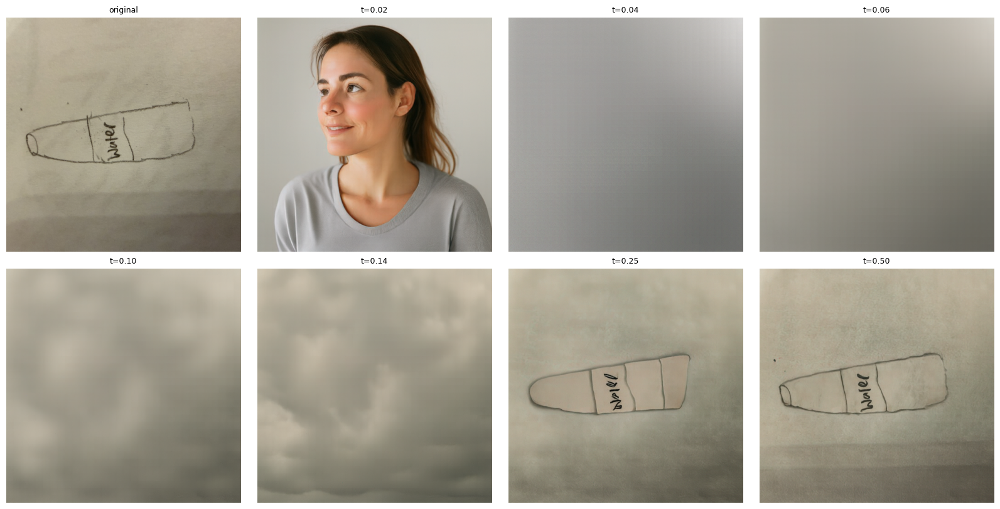
At the lowest starting times the model mostly makes up its own image keeping only the colors and most of the time the photo doesn't even make sense. As the starting time goes up, more of the original shape comes back, and by 0.25 to 0.50 every edit is close to the original. Clean line drawings like the race car come back early, while thin pencil sketches only return at 0.25.
Part 3.2: Text-Guided Image Editing
This is the same procedure as 3.1, but with an edit prompt instead of "a high quality photo", so the model pulls the image toward the prompt while the starting time controls how much of the original structure is kept.
starting image = (1 - t) * noise + t * original image, then take Euler steps with the guided velocity for the edit prompt
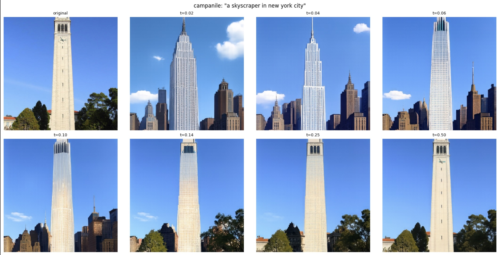
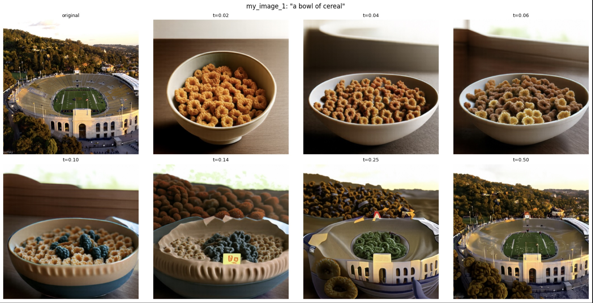
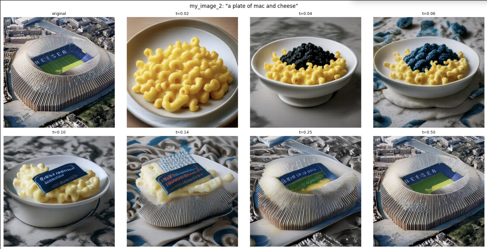
Low starting times give a plain version of the prompt, and high ones give back the original. The interesting edits are in between (around 0.10 to 0.25), where the result is the prompt in the shape of the original, like a bowl of cereal built like Memorial Stadium.
Part 3.3: Visual Anagrams
At each step I get the CFG velocity for the first prompt on the image, and the CFG velocity for the second prompt on the image rotated 180° (then rotate that velocity back). Averaging the two and taking an Euler step makes an image that has to satisfy both prompts, one upright and one upside down.
velocity = (velocity for prompt 1 + flip(velocity for prompt 2 on the flipped image)) / 2, where flip rotates 180°
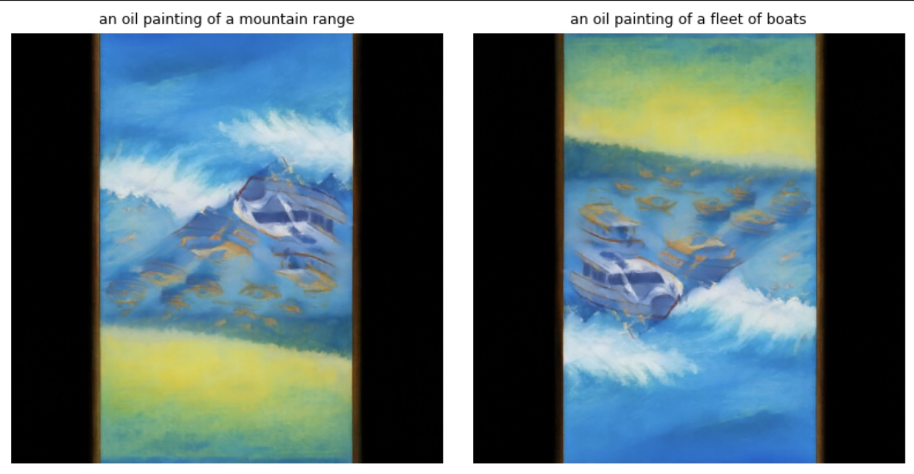
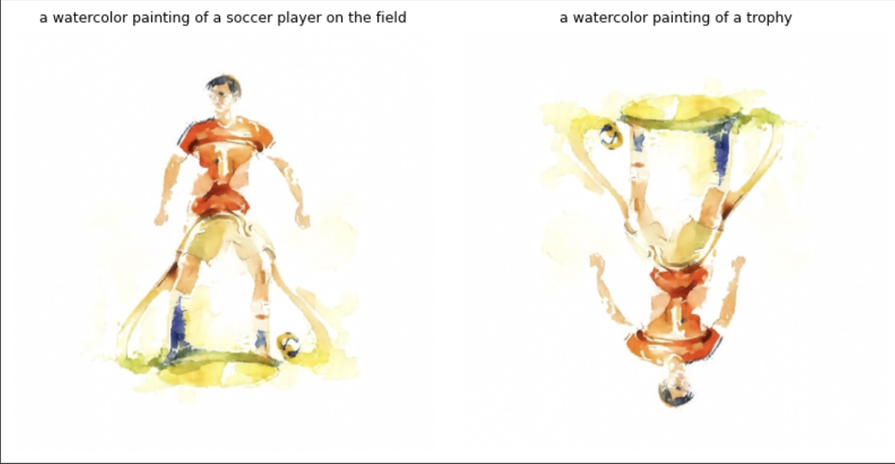
Part 3.4: Hybrid Images
Like a hybrid image from project 2, but done on the velocities. The low frequencies come from the far prompt and the high frequencies from the near prompt (Gaussian blur, kernel size 265, σ = 16). Up close you see the near prompt, and from far away you see the far prompt.
velocity = blurred velocity for the far prompt + fine details of the velocity for the near prompt
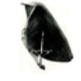
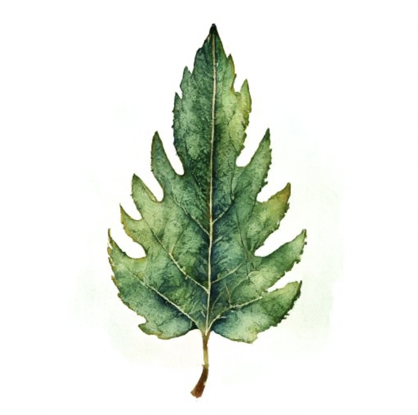
Part B: Flow Matching from Scratch
For Part B I train my own models on MNIST digits (28×28 grayscale), building up from a simple denoiser to a class-conditioned flow matching model.
Part B 1.1: Implementing the UNet
I basically just copied the UNet from the architecture diagrams in the assignment below, implementing each of the simple and composed ops and wiring them together the same way.
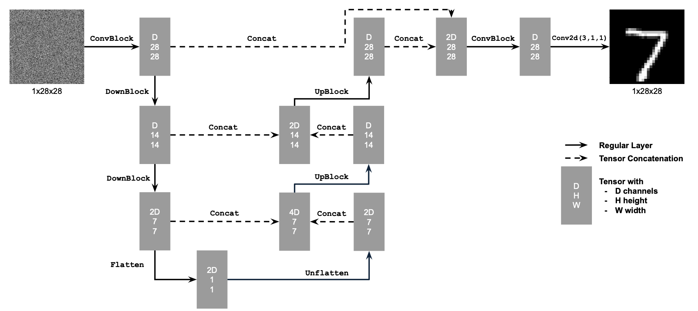
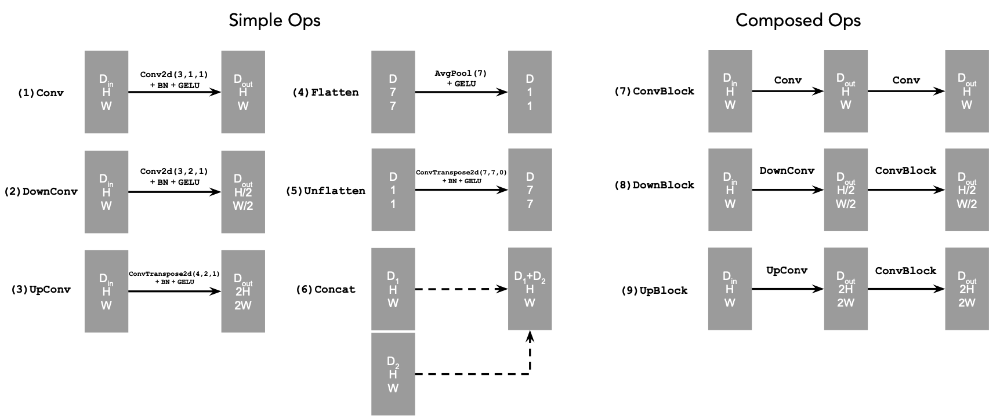
Part B 1.2: Using the UNet to Train a Denoiser
To make training pairs, I add Gaussian noise to clean digits at different strengths σ.
noisy image = clean image + sigma * noise
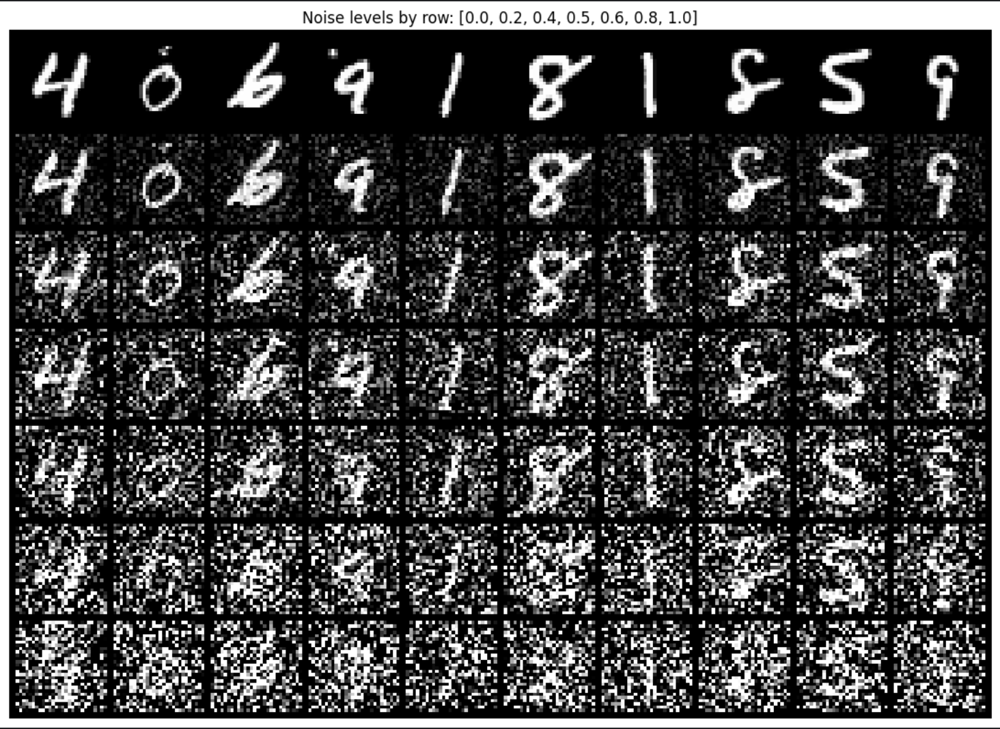
At low σ the digits are easy to read, but as σ grows the strokes blend into the background, and by σ = 1.0 most digits are hard to make out.
1.2.1: Training
I trained the denoiser (D = 128) for 5 epochs with Adam (lr = 1e-4, batch size 256) to turn a noisy digit back into the clean one, using σ = 0.5 with fresh noise every batch.
loss = (denoiser(clean image + 0.5 * noise) - clean image) ** 2, averaged over pixels
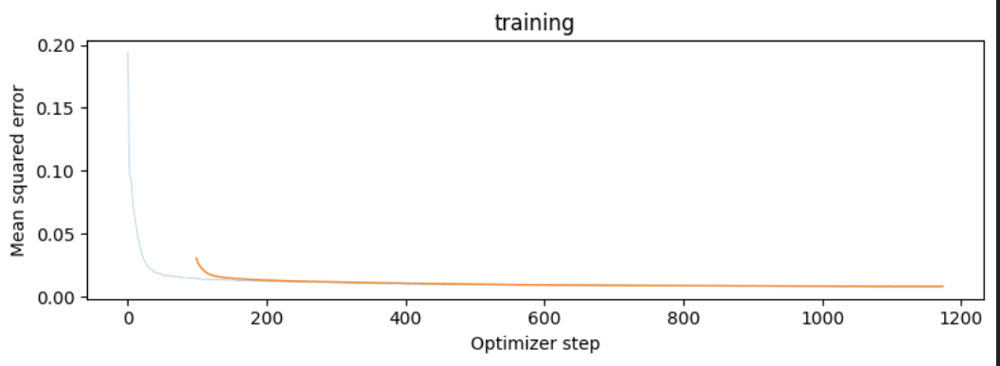
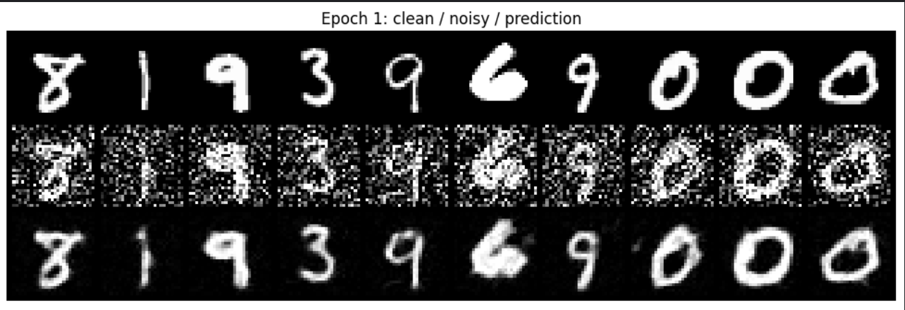
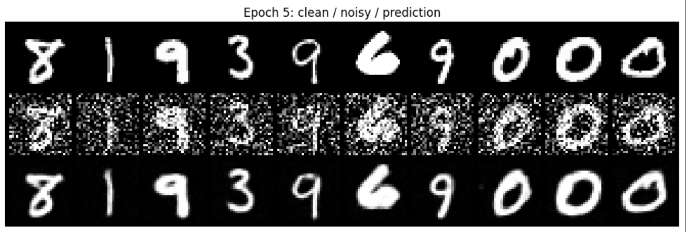
After one epoch the outputs are already readable but soft. By epoch 5 the strokes are sharper and closer to the clean digits.
1.2.2: Out-of-Distribution Testing
The denoiser was only trained at σ = 0.5, so I test it on other noise levels to see how well it handles noise it hasn't seen.
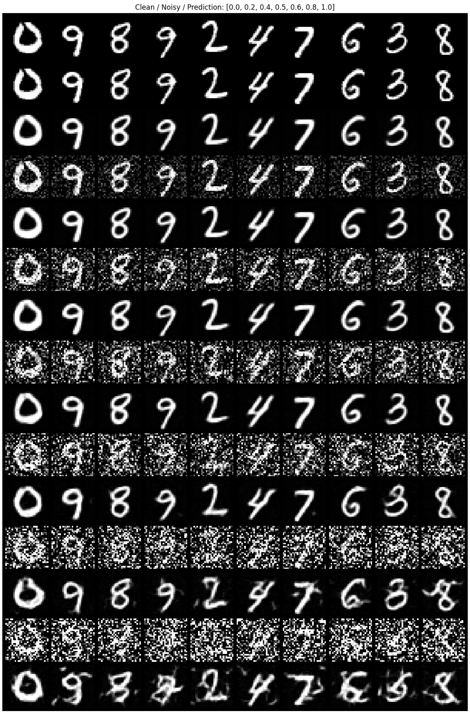
Up to σ = 0.6 the outputs stay clean. At 0.8 they start to smear, and at 1.0 many digits fall apart, since the model never learned to remove that much noise.
1.2.3: Denoising Pure Noise
Here the input is pure noise with no digit in it. Every output is the same blurry blob that looks like a mix of 0, 8, and 9, and it barely changes from epoch 1 to epoch 5. The noise says nothing about which digit to make, so the MSE loss is minimized by predicting the average of all training digits (their centroid), which is exactly this blob. That's also why the loss flattens out around 0.07 almost right away. The edges of the number are also more clearly defined than the center as a result of numbers like 3, 6, 8, 9, 0, 5 which all of the exterior boundaries making the average more clear around the borders.
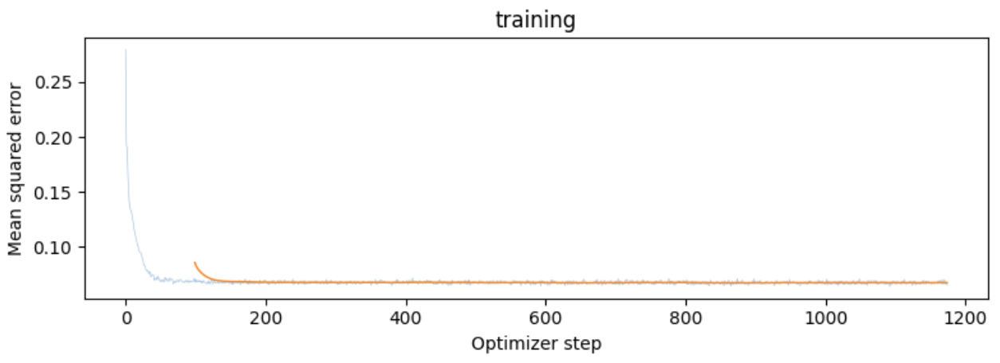
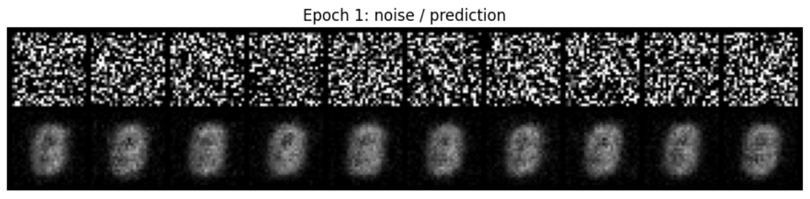
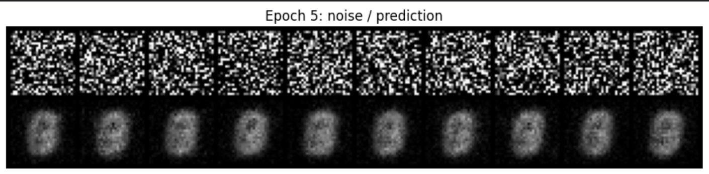
Part B 2.1: Adding Time Conditioning to the UNet
Flow matching mixes noise and a clean digit at a random time t, and trains the UNet to predict the velocity (clean digit − noise) that moves from noise toward the digit. To tell the network what t is, I used the spec below to update my UNet from 1.1 with the conditioning: I added an FCBlock and used two of them to turn t into a per-channel scale that multiplies the Unflatten output and the first UpBlock output.
noisy image = (1 - t) * noise + t * clean image
true velocity = clean image - noise
loss = (predicted velocity - true velocity) ** 2, averaged over pixels
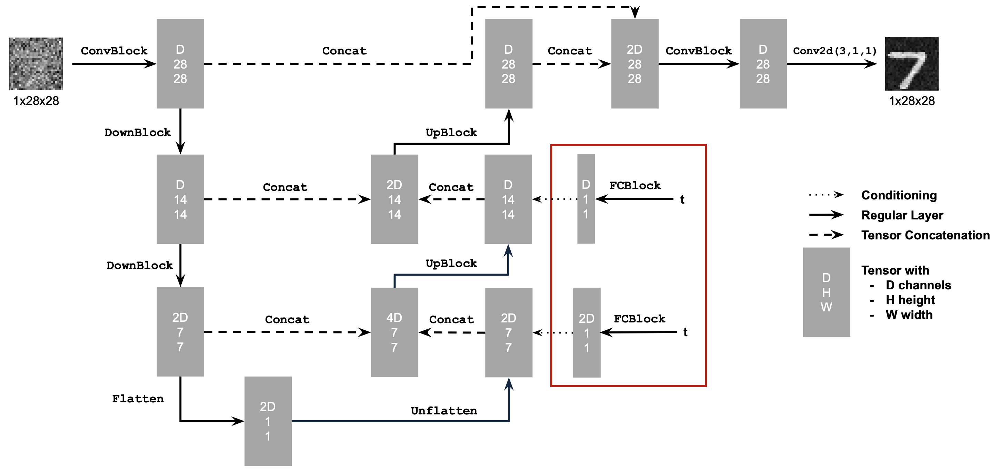
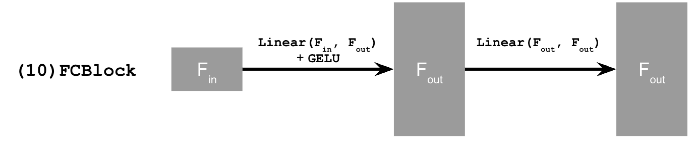
Part B 2.2: Training the Time-Conditioned UNet
For each batch I sample fresh noise and a random t ~ U[0, 1] per image, and train on the loss above. I used D = 64, batch size 64, and Adam starting at lr = 1e-2 with an exponential decay (γ = 0.11/10) each epoch, for 10 epochs.
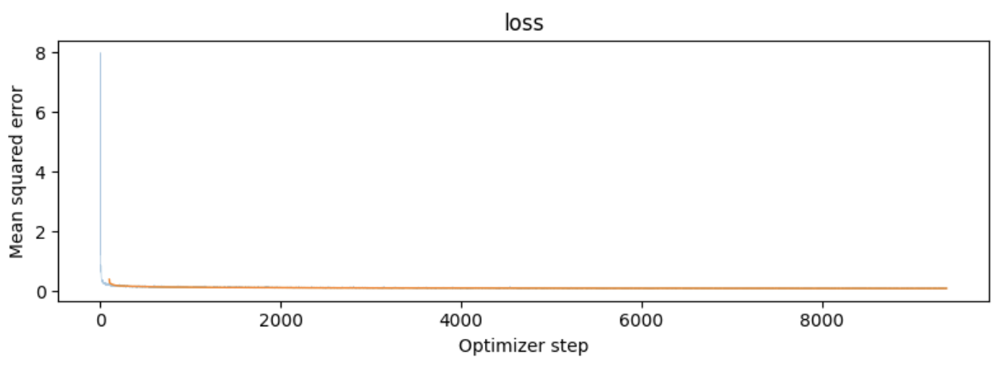
The loss drops sharply in the first few hundred steps and then keeps improving slowly. It's predicting velocity rather than the clean image, so it isn't directly comparable to the loss in Part 1.
Part B 2.3: Sampling from the Time-Conditioned UNet
To sample, I start from pure noise at t = 0 and take 50 Euler steps along the predicted velocity.
next image = current image + (1/50) * predicted velocity, starting from noise and repeated 50 times
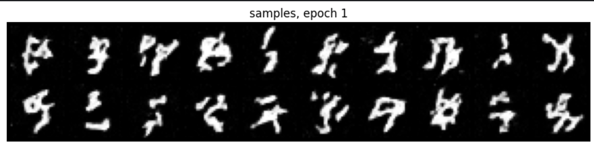
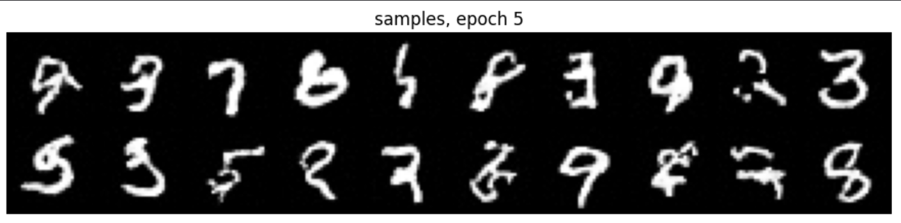
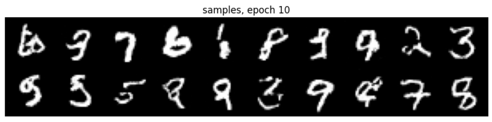
At epoch 1 the samples are just squiggles, by epoch 5 recognizable digits appear, and by epoch 10 most are readable. Some still look malformed or like two digits merged, since the model doesn't know which digit it's making.
Part B 2.4: Adding Class Conditioning to the UNet
To also condition on the digit, the class becomes a one-hot vector c fed through two more FCBlocks. The class embedding scales the features and the time embedding shifts them. 10% of the time c is set to all zeros, so the same network also learns the unconditional velocity needed for classifier-free guidance.
unflatten = class scale * unflatten + time shift
up1 = class scale * up1 + time shift
Part B 2.5: Training the Class-Conditioned UNet
Training is the same as 2.2 (D = 64, batch size 64, lr = 1e-2 with exponential decay, 10 epochs), except each batch also passes its labels, with the 10% class dropout.
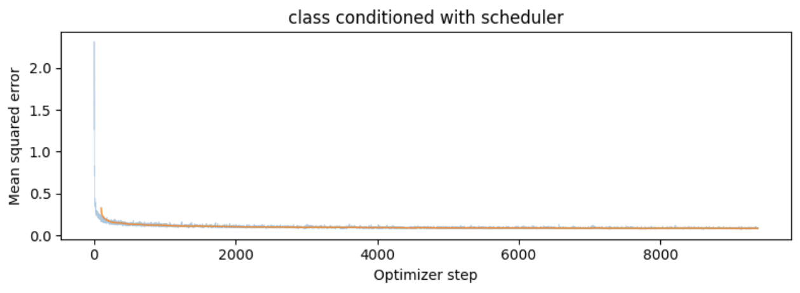
The loss follows a similar shape to the time-only model: a sharp drop early, then a slow decline for the rest of training.
Part B 2.6: Sampling from the Class-Conditioned UNet
Sampling uses 300 Euler steps with classifier-free guidance (γ = 5), generating 4 of each digit.
guided velocity = no-class velocity + 5 * (class velocity - no-class velocity)
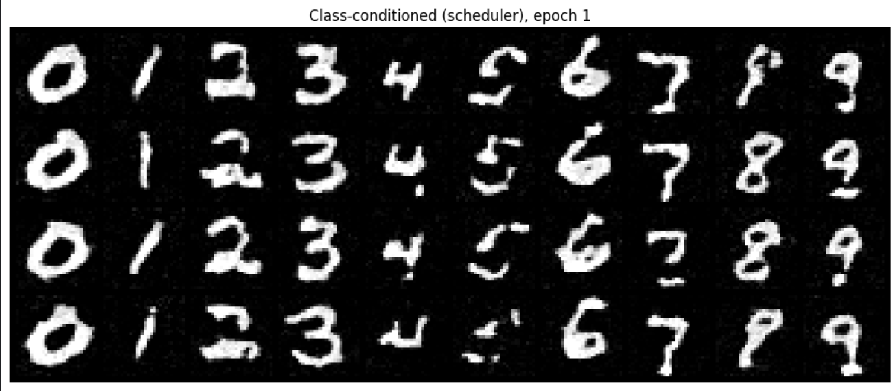
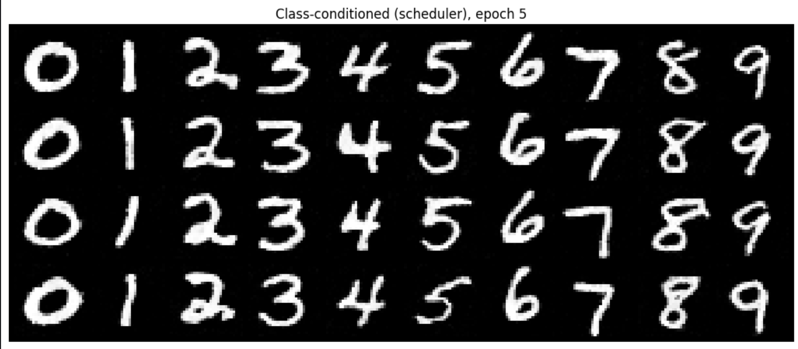
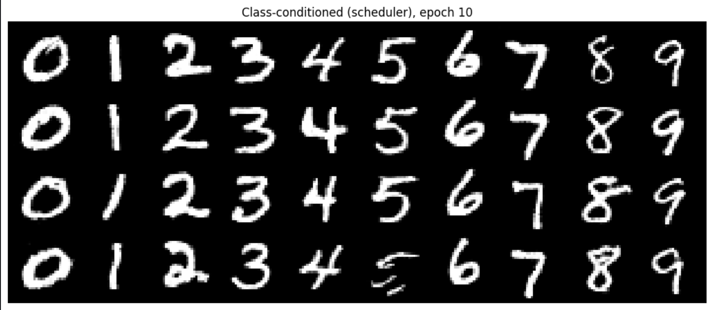
Knowing the class helps a lot: epoch 1 already gives mostly the right digits, and by epoch 5 they're clean. The time-only model was still making squiggles at that point.
Removing the learning rate scheduler
The scheduler starts at a high learning rate 0.02 for fast progress and decays it so training settles down at the end. Without it, keeping the learning rate the whole time would be too large to settle properly, so I used 0.001 instead, which is small enough to be stable but still fast. It ends up just as good: the digits are clean at epoch 1 (cleaner than with the scheduler), look about the same at epochs 5 and 10, and the loss ends at about the same value.
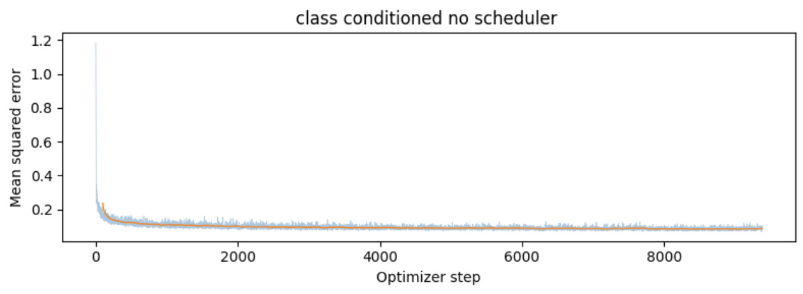
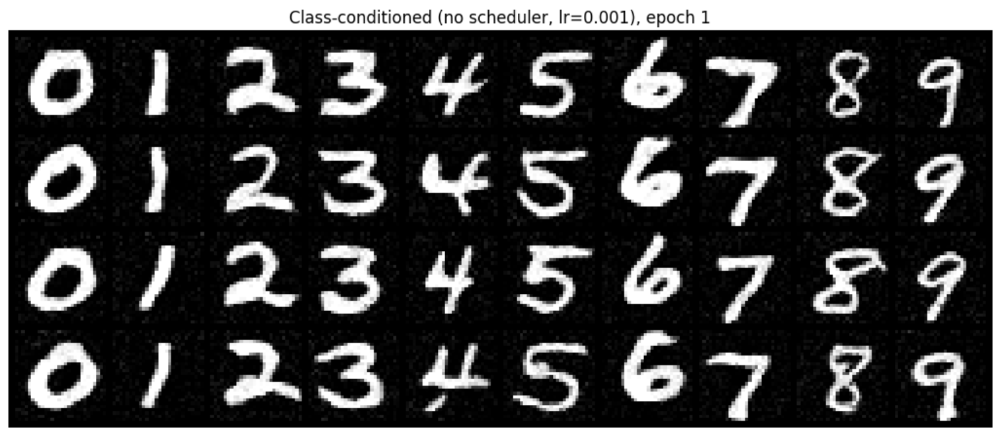
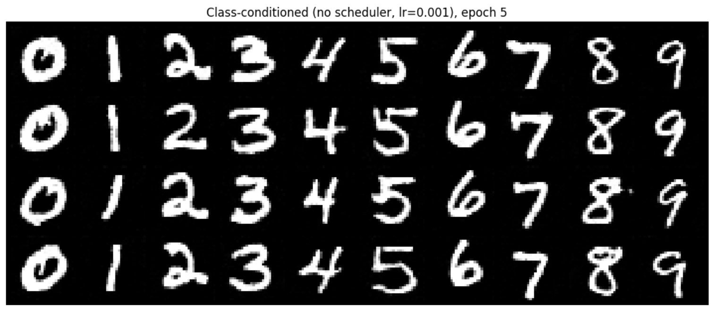
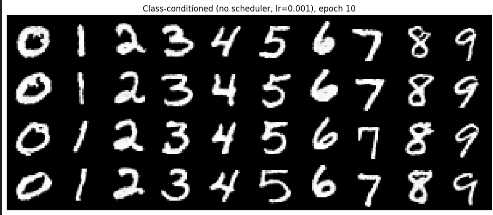